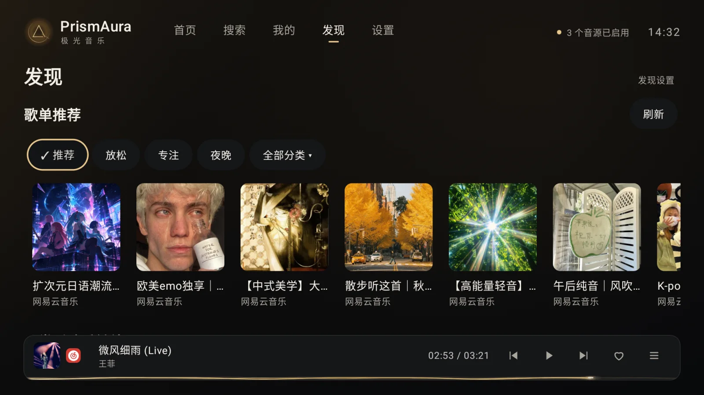
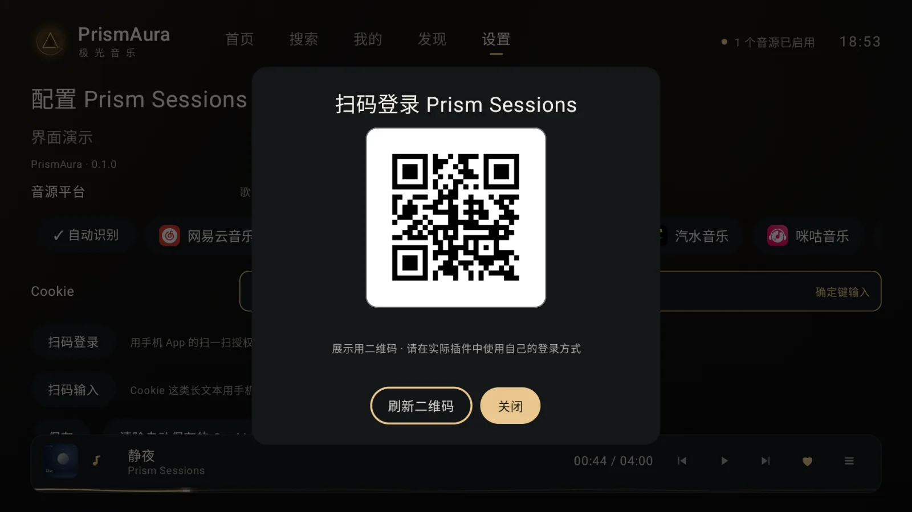
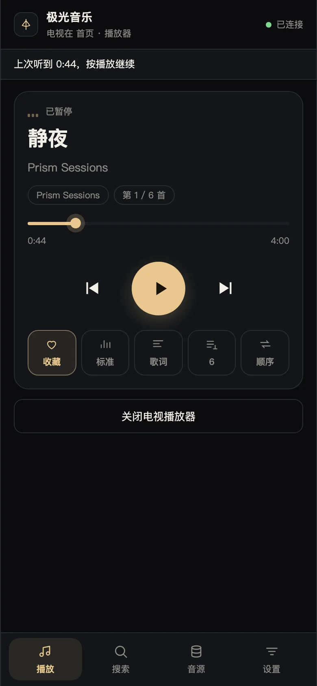
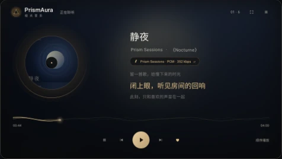
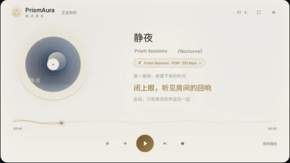
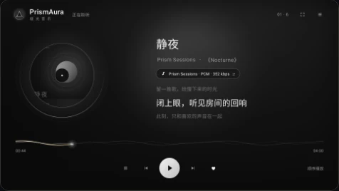

录屏展示选择 GD 音乐台搜索歌曲，以及真实曲目的同步歌词、旋转唱片和播放队列。两个片段分别录制，音源由用户安装的插件提供。
好音乐，慢慢发现
浏览分类歌单、榜单与歌手。插件支持扫码登录时，用手机确认即可，省去电视上输入账号的麻烦。


同一局域网 · 扫码即用
手机是遥控器，
也是键盘
手机和电视连接同一局域网，扫码打开遥控页面，无需另装手机 App。
- 轻松搜索
- 用手机键盘输入歌名和歌手，省去遥控器逐字选择。
- 随手控制
- 切歌、调整进度与音量，查看电视当前的播放状态。
- 管理音源
- 粘贴插件或订阅地址，在手机上完成配置。

三种光线，同一种专注
左右滑动，查看三套主题

极夜暖金
深色打底，暖金点亮歌词与播放控制。

晨光白瓷
柔和浅色，让白天的客厅也清晰舒适。

静谧黑白
黑白界面与清晰歌词，保留封面原有色彩。
音源，由你选择
兼容 MusicFree 常用插件接口，并提供扫码登录、热搜与 MV 扩展。具体内容、播放权限与可用功能取决于插件及对应服务。
- 找歌与听歌
- 搜索歌曲、浏览歌单与榜单，按需选择可用音质。
- 歌词与 MV
- 显示同步歌词、翻译与注音，插件提供词级时间戳时逐字高亮。播放页的「歌词」按钮可调整字号、翻译／注音显示与当前歌曲的歌词时间；插件支持时，也能播放 MV。
- 收藏与导入
- 收藏、历史与歌单保存在本机。插件支持时，可导入歌单或单曲链接；单曲会保存为只有一首歌的本机歌单。
- 播放失败自动换源
- 可在「设置 → 播放」开启，默认关闭。本源所有音质均不可用后，尝试其他已启用音源的同版本歌曲；仍失败再跳过。
- 熄屏播放
- 播放页可进入纯黑画面继续听歌，按确定或返回恢复；音量和媒体键照常使用。不保证关闭电视背光。
想接入自己的插件？查看插件开发文档与兼容能力矩阵。
从这里，开始听
准备一台 Android 6.0 及以上的电视或盒子，并确保系统 WebView 可用。
下载并安装
在 GitHub 发布页下载 APK，通过电视支持的 U 盘或文件传输方式安装；按系统提示允许安装此来源的应用。
添加音源
打开「设置 → 音源」，添加你信任的 MusicFree 兼容插件或订阅。也可以扫码，用手机粘贴地址。
选一首喜欢的歌
按插件需要完成账号配置，再搜索歌曲或浏览歌单；支持时可使用扫码登录。
客户端不附带插件、订阅地址或音乐内容。首次安装后，需要自行添加音源；网页用于介绍产品，音乐在电视 App 中播放。
开始前，你可能想知道
关于音源、播放和更新的几个常见问题。
为什么安装后没有歌曲？
PrismAura 不附带音源。在「设置 → 音源」添加自己信任的插件或订阅后，再搜索歌曲或浏览歌单；也可以扫码，用手机粘贴地址。查看插件接入范围。
为什么搜到了歌曲，却无法播放？
搜索结果不代表一定可播放，实际取决于插件、内容服务、账号权限和网络。先检查插件是否有更新，并按插件要求完成配置；需要登录的内容，应使用自己的账号。
「设置 → 播放」可开启“播放失败自动换源”（默认关闭）：本源所有音质均不可用时，尝试其他已启用音源的同版本歌曲；仍失败时沿用自动跳歌流程。该开关随备份导出和恢复。
想重新登录，如何重置音源配置？
在「设置 → 音源」找到对应音源，进入「配置 → 重置配置」，清除该音源填写的参数和本机保存的登录信息，再重新登录或填写。音源本身、收藏和歌单会保留。
更新需要卸载旧版本吗？
不需要。使用相同包名、相同签名且版本更高的安装包覆盖升级，可以保留现有应用数据；也可在「设置 → 关于」检查更新。自行构建时需要沿用原签名，查看更新说明。